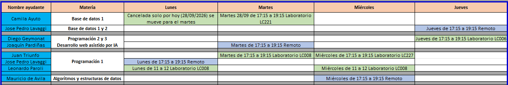

La ayudantía tiene como objetivo brindar un espacio de consulta fuera del horario de clase para evacuar dudas sobre ejercicios planteados en clase. Los ayudantes son estudiantes avanzados de la carrera y estarán disponibles únicamente en el horario de la ayudantía.
Inicio: 7 de setiembre
Final: 4 de diciembre
